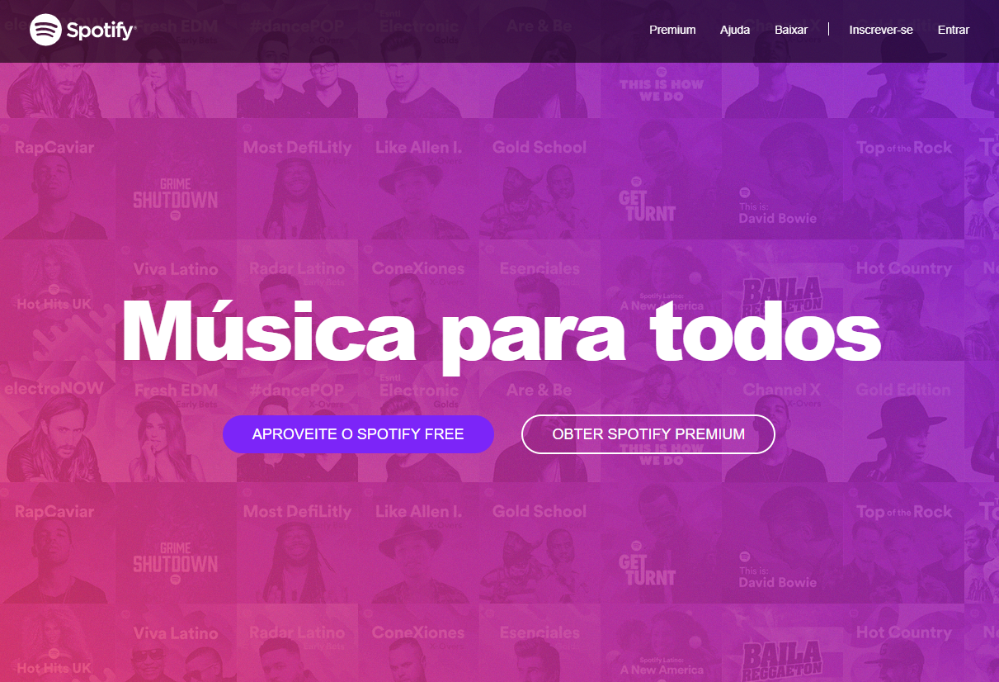

LadyBug Dev
Calculadora
Neste projeto a idéia era aprender e estudar a formatação de projetos em JavaScript.
Esta calculadora tem todas as funcionalidades de uma calculadora convencional, ela soma, divide, multiplica, trabalha com porcentagem, números com vírgula. Além disso ela também tem opção com som, opção de utilizar o teclado do computador, ela efetua novamente a ultima operação se clicado o igual, enfim todas as funcionalidades.
Spotify

No projeto proposto pelo curso eu teria que criar uma página o mais similar possivel com a do spotify e foi o que fiz seguindo as instruções.
Neste projeto eu comecei a aprender sobre bootstrap, usei css e HTML.
O interessante deste projeto é a responsividade que o bootstrap da para a pagina, assim temos uma pagina mais 'correta' e agradável.
TecBlog
Este projeto é uma pagina blog chamada TecBlog onde a proposta era treinar a utilização de CSS. Foi a primeira vez que tive contato com CSS, com este projeto eu pude treinar o começo de posicionamento, testar o menu fixo, aprender a modificar links e muitas outras coisas.
Ele não possui nada muito especial, porém possui um design limpo e agradável.
JM Viagens
Meu primeirissímo projeto na web.
JM Viagens foi um exercício em que eu não conhecia nada de CSS ainda, então ele foi completamente formatado em HTML com tabelas e outros truques que não são utilizados no dia-a-dia, mas foi uma ótima forma de aprender a importância do CSS.